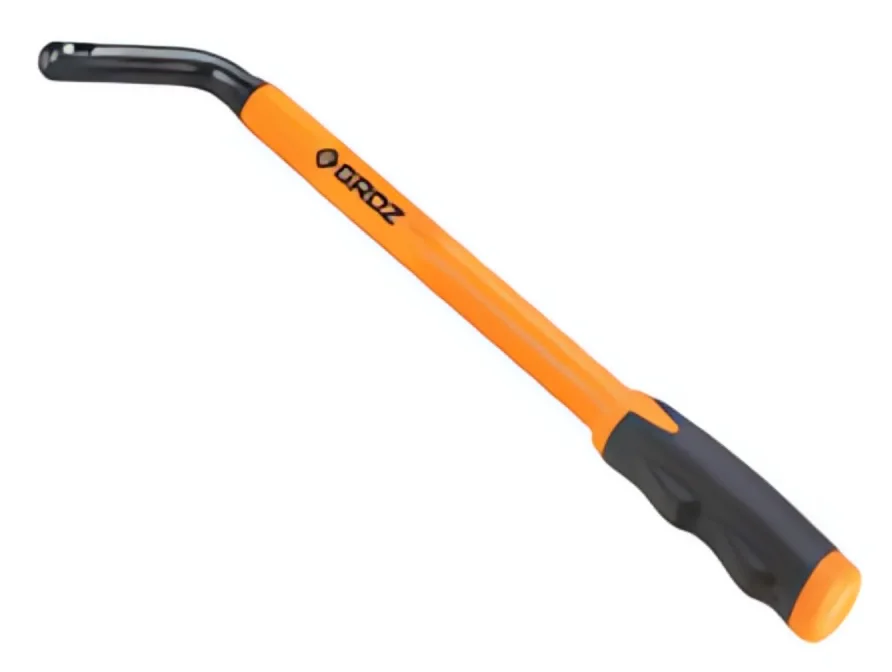

GROZ · Spanners & Wrenches
Telescopic Wheel Wrench
CAT NR WW/TP/17-23/ST · ORD NR 31951
| CAT NR (catalogue number) | WW/TP/17-23/ST |
|---|---|
| ORD NR (order number) | 31951 |
| Box quantity | 12 |
| Length compact (L1) (inch) | 14-2/5 |
| Length compact (L1) (mm) | 365 |
| Length extended (L2) (inch) | 20-3/5 |
| Length extended (L2) (mm) | 527 |
| Sq. drive (inch) | 1/2 |
Ask for a quote The catalogue PDF, page 203
“Ask for a quote” opens this product in the catalogue: add it to your quote and send it. Buyers from Africa, the Gulf and worldwide are welcome; prices in USD, EUR or INR.
From the GROZ Workshop Tools CB-05 catalogue. Not yet verified: these details were read from the printed catalogue automatically; check the catalogue page before ordering.